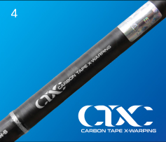
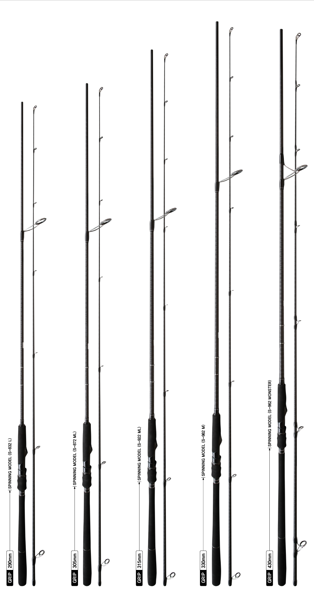

3.One-grip at the bottom of grip increases convenience and minimizes scratches during the use of holder on board a ship

BLANK TECHNOLOGY
4.Adopting the CTX, it provides ultra-high strength and highest sensitivity
hurricaneX inshore
Model
Lenght (m)
Section (pcs)
C.Length (cm)
Weight (g)
Top Dia (mm)
Butt Dia (mm)
LURB wt. (g)
P.E LINE (lb)
Guide (ea)
Grip (mm)
Retail Price (w)
S-832L
2.52
2
130.0
141.5
1.7
12.1
6~25
2.4~4.8d
8
290
175,000
S-872ML
2.62
2
135.0
151.6
1.8
12.3
10~35
3.2~6.0
8
305
180,000
S-922ML
2.80
2
144.0
158.9
1.7
12.8
12~45
4.0~7.0
9
315
185,000
S-982M
2.95
2
151.5
180.5
1.8
13.4
18~60
4.8~8.0
9
330
190,000
S-962 MONSTER
2.90
2
149.5
233.4
2.2
17.0
20~80
8.0~16.0
8
430
195,000
An affordable and high-quality model, adopting the CTX to provide high strength blank
This model is the final edition of constantly evolving Hurricane series. It consists of 5 spectrums of fishing rods for various games, ranging from light inshore game to big inshore game, and is ideal for all types of targeted fish. The blank provides standard action for inshore fishing. Adopting the CTX, a combination of carbon and carbon tape, it was designed to prevent twist of blank while casting in the face of wind shear with sudden change of wind direction and speed and to ensure powerful long casting and overhead casting with pin-point accuracy. Adopting the Fuji guide and seat, it also increased the durability. With excellent resilience of blank, this model provides powerful performance with 45-degree rod balance during the fight with the targeted fish.
S-832L (GRIP 290mm) Halibut, sea bass, rockfish(armorclad rockfish), rock trout, and scorpion fish.
This model is ideal for operation of relatively light fishing tackle. Adopting the CTX, it has the advantages for inshore games that involve repetitive casting. The excellent stiffness of blank enables overhead casting even in the face of strong head wind. Also, it adopted the Fuji guide to increase durability.
S-872ML (GRIP 305mm) Halibut, sea bass, rockfish(armorclad rockfish) Japanese Spanish mackerel and common dolphin fish.
This model, a standard model for inshore game, is the choice of many anglers, Adopting the CTX, this model reduced the twist of blank by 1.5 times, enabling the overhead casting with precision. Additionally, this model increased the resilience by 1.4 times, making it easier to fight large fish. Long casting is basic. Adopting the Fuji guide, it increased strength and corrosion resistance.
S-922ML (GRIP 315mm) Halibut, sea bass, rockfish(armorclad rockfish) Japanese Spanish mackerel and common dolphin fish.
This model provides an unmatched probing capability. As a pilot type, this model is recommended for the anglers who need heavier and longer distance casting. Adopting the CTX, this model is a medium light(ML) type, but provides excellent resilience allowing anglers to fight any fish that they target. With the Fuji guide adopted, this model also has good adaptability to seawaters.
S-982M (GRIP 330mm) Halibut, sea bass, rockfish(armorclad rockfish), Large scomberomorini and common dolphin fish.
This model was designed for heavy tackle. It applies the CTX technique that allows anglers to fight the targeted semi-big games. So, this model provides excellent stiffness strong enough to eliminate problems in managing heavy lures and features the cane-like tip pushing the lure powerfully and quickly, thus increasing the ease of long casting. Moreover, this model can be used for shore jiggling and adopted the Fuji guide to increase durability.
This model was designed to fight for the targeted fish of inshore game, such as yellow tail, yellowtail amberjack, large scomberomorini, and tuna, Adopting the CTX, this model provides a mixture of strong stiffness necessary for big game casting rods, high flexibility and resilience of blank. This model is an essential item for an increasing number of inshore big game anglers.

CTX Method
In order to reinforce the compressive strength that is the weakest point for the carbon thread with type of Uni-Direct, 24 or 30 tons Carbon tape is wrapped with the shape of X at regular pitch in the outermost of the blank. This is the method to reinforce the compressive strength with the great exterior.